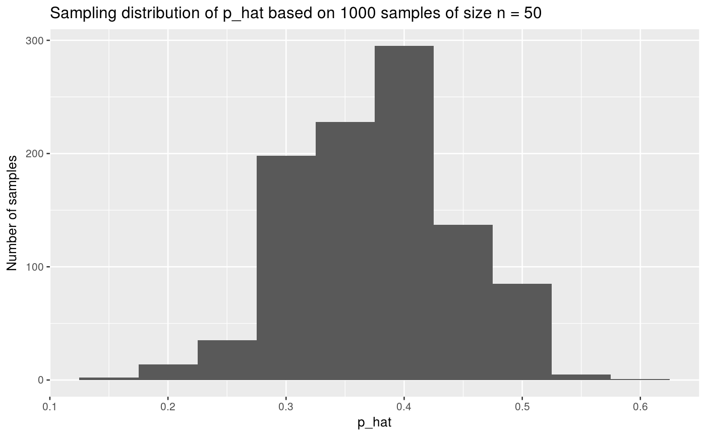

These functions extend the functionality of dplyr::sample_n() and
dplyr::slice_sample() by allowing for repeated sampling of data.
This operation is especially helpful while creating sampling
distributions—see the examples below!
rep_sample_n(tbl, size, replace = FALSE, reps = 1, prob = NULL) rep_slice_sample(.data, n = 1, replace = FALSE, weight_by = NULL, reps = 1)
| tbl, .data | Data frame of population from which to sample. |
|---|---|
| size, n | Sample size of each sample. |
| replace | Should sampling be with replacement? |
| reps | Number of samples of size n = |
| prob, weight_by | A vector of sampling weights for each of the rows in
|
A tibble of size rep * size rows corresponding to reps
samples of size size from tbl, grouped by replicate.
The dplyr::sample_n() function (to which rep_sample_n() was
originally a supplement) has been superseded by dplyr::slice_sample().
rep_slice_sample() provides a light wrapper around rep_sample_n() that
has a more similar interface to slice_sample().
#> #>#> #> #>#> #> #>library(ggplot2) # take 1000 samples of size n = 50, without replacement slices <- gss %>% rep_sample_n(size = 50, reps = 1000) slices#> # A tibble: 50,000 x 12 #> # Groups: replicate [1,000] #> replicate year age sex college partyid hompop hours income class finrela #> <int> <dbl> <dbl> <fct> <fct> <fct> <dbl> <dbl> <ord> <fct> <fct> #> 1 1 2000 32 fema… no deg… dem 2 40 $1500… lowe… below … #> 2 1 1982 45 fema… no deg… ind 3 40 $2000… work… average #> 3 1 1984 37 fema… no deg… dem 4 15 $2500… work… average #> 4 1 2008 47 fema… degree ind 1 37 $2500… midd… above … #> 5 1 1991 40 fema… no deg… dem 2 15 $1500… work… below … #> 6 1 1998 32 male degree dem 4 40 $2500… work… average #> 7 1 1984 27 male no deg… rep 3 50 $1500… midd… average #> 8 1 1994 30 fema… no deg… dem 3 44 $2500… work… average #> 9 1 1988 40 male no deg… dem 5 50 $2500… work… below … #> 10 1 2018 37 male degree ind 4 40 $2500… work… above … #> # … with 49,990 more rows, and 1 more variable: weight <dbl># compute the proportion of respondents with a college # degree in each replicate p_hats <- slices %>% group_by(replicate) %>% summarize(prop_college = mean(college == "degree"))#># plot sampling distribution ggplot(p_hats, aes(x = prop_college)) + geom_density() + labs( x = "p_hat", y = "Number of samples", title = "Sampling distribution of p_hat" )# sampling with probability weights. Note probabilities are automatically # renormalized to sum to 1 library(tibble) df <- tibble( id = 1:5, letter = factor(c("a", "b", "c", "d", "e")) ) rep_sample_n(df, size = 2, reps = 5, prob = c(.5, .4, .3, .2, .1))#> # A tibble: 10 x 3 #> # Groups: replicate [5] #> replicate id letter #> <int> <int> <fct> #> 1 1 1 a #> 2 1 3 c #> 3 2 1 a #> 4 2 3 c #> 5 3 3 c #> 6 3 4 d #> 7 4 1 a #> 8 4 2 b #> 9 5 2 b #> 10 5 1 a